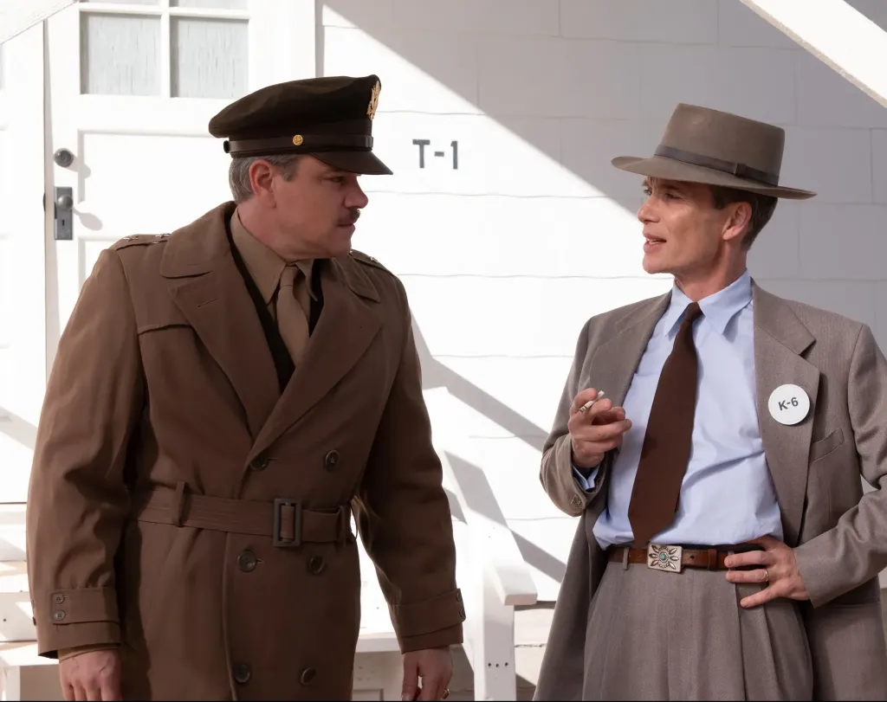

THE WORLD WILL REMEMBER THIS
DAY…..AND THIS MOVIE
Director Christopher Nolan is an acclaimed film director that many, including myself, have found to be exceptional in the execution of the films that he directs. While he’s been around for quite some time, developing several short films (both released unreleased), several first noticed Nolan’s work as a director in his sophomore film Memento. Released in 2000, Nolan’s Memento was a complex film of dueling narratives story threads, which meet at the end of the film, producing one whole and cohesive narrative storyline. Even if you didn’t have Memento on your “movie radar” or even his third time Insomnia in 2003, many (and I do mean many) recognized Nolan’s directorial work after successful taking the DC superhero “cape crusader” (i.e. Batman) and created the celebrated Dark Knight trilogy (Batman Begins, The Dark Knight, and The Dark Knight Rises). From there, Nolan went on becoming a much-respected director from critics and the public of moviegoers, with his other films like The Prestige, Inception and Interstellar. Nolan’s approach to crafting a feature film is what makes him truly stand out, rooting his pictures with sociological, ethical, and philosophical concepts / ideas, the explanation and constructs of time, and the nature of personal identity and memory. Additionally, Nolan, who usually also writes the screenplay for most of his movies, also weaves very complex narratives, with some nonlinear storytelling and a tendency to emphasis characters (and their cinematic journey) rather than making the feature’s primary focus on its visual effects and other nuances. Such was the case with his latest 2017 film Dunkirk, which took branched out into the realm of WWII, but imbuing the feature with Nolan’s cinematic flourishes, while 2021’s Tenet continued to explore the director’s concept of time (the flow of it and inverted passage of time) in the realm of a sci-fi action thriller. Now, two years after the release of Tenet, director Christopher Nolan and Universal Pictures prepare for another release an explosive bio-pic drama in the release of Oppenheimer, a film to examine the life of J. Robert Oppenheimer and his work on the atomic bomb. Does this movie give a stirring and cinematic insight in the “father of the atom bomb” or is it bloated endeavor that explodes underneath the weight of inherit hype and anticipation?
THE STORY
J. Robert Oppenheimer (Cillian Murphy) has proven himself to be brilliant theoretical physicists, educating himself by other genius minds that have nurtured and challenged his intellect in the realm of quantum mechanics and theory. After expecting a teaching job in Berkeley, Oppenheimer finds himself receiving an unlike invitation to be a part of the American war machine effort, tasked by General Leslie Groves (Matt Damon) to development of an atomic bomb as World War began to take shape in early 1940s. During the next several years, Oppenheimer is given the mission of assemblage, with the formation of a team that will work together with other dysfunctional geniuses, while trying to keep Groves and his military intelligence on an even keel pace with the operation. While Oppenheimer found a match in his wife, Kitty (Emily), and maintained a rocky lover affair in Jean (Florence Pugh), the physicist’s focus remains primarily on the organization of the Trinity Sit, taking scientists and military personnel to New Mexico to build an atomic bomb. Yet, even after the creation of the bomb, Oppenheimer faces scrutiny from various members, including trying to find common ground with Atomic Energy Commission figure, Lewis Strauss (Robert Downey Jr.), as he quickly realizes that his success comes at a price, with those in charge of the nation unwilling to let him to have a way in the bomb’s legacy.

THE GOOD / THE BAD
Sorry if this sounds a bit summary to what I said in my review for both Dunkirk and Tenet (the opening paragraph and this one), but it definitely speaks true to my point. So….as stated above…. Christopher Nolan has become a very successful and widely known film director over the past several years in Hollywood moviemaking. Whenever he announces his newest film to direct, the internet newsfeeds light up as many moviegoers and critics eagerly start counting down the days to its release. I do remember first seeing Memento and, at first glance, found it to be confusing, but I learned to appreciate its complexity and unconventional narrative over time (I definitely had to watch that movie several times to fully get it). And of course, I, like many, fell in love with Nolan’s The Dark Knight trilogy, especially with The Dark Knight, and how Nolan’s take on the infamous DC comic book character changed the ultimate direction of superhero movies (for the better). Then came Nolan’s mind-bending feature of Inception and blew me away (probably one of my favorite Christopher Nolan movies) with its actors / characters of the movie (my first introduction to actor Tom Hardy) and within its intricate storytelling of individuals entering a person’s subconscious dreamscape.
Interstellar, however, was a bit of tossup. Sure, it had all the flairs and nuances of Nolan’s works as well as being well-acted and delivering a very intriguing story, but it was way too drawn out and a bit confusing in trying to decipher all the scientific technobabble for all non-master’s degree in quantum physics individuals. And finally, Dunkirk, Nolan’s last film, was truly a cinematic experience worth of all the praise and acclaim it received (in my opinion). The complexity of layering three different storylines (each one having their own distinct feeling and time flow) was a bit unorthodox, but I expected something that Nolan would want to achieve through a theatrical film. Its effective proved to be worthwhile, with Dunkirk succeeding in a great cinematic experience that was just as engaging as a feature film as it was for a WWII movie. As for Tenet, I did actually really liked the movie. Yes, it was a bit confusing at times and sort of didn’t explain the plot (or subplots) or even the world building aspects were a bit vague, but it stilled captured an enticing and excitement cinematic experience that showcased Nolan’s signature style with joyous glee and fun.
Of course, this brings me back around to talking about Oppenheimer, a 2023 biographical drama film that is based on the book “American Prometheus” by Bai Bird and Martin J. Sherwin. Despite Tenet being a weaker box office result (mainly due to the COVID-19 pandemic), Nolan’s 2020 film received a lot of praise from critics and moviegoers alike; prompting the acclaimed director to begin his next project, which (strange enough) was going to be a biographical film that focuses the camera lens on Oppenheimer, the man who created the atomic bomb. Nolan doing a bio pic? Certainly was a very bizarre decision, especially since the director’s past films weren’t known for strong character development. Still, if Nolan was helming the project, I would certainly be up to see it. After that, the film’s cast was soon announced, with Oppenheimer having a vast collection of acting talents to be attached to the upcoming feature, with actor Cillian Murphy set to play the role of J. Robert Oppenheimer. In 2022, the film’s official teaser trailer dropped with the theatrical screening of the film Nope, which I saw in theaters, and gave the us (the world) the first glimpse at the movie….and it looked incredible. The hype for the movie continued to be build and build with each passing month as Nolan’s next movie continued to gain momentum as moviegoers eagerly awaited to see what lies in store in Oppenheimer. Of course, this was fueled even more when it was announced that the film, which was going to be released on July 21st, 2023, was going to be release alongside Warner Bros’s Barbie, another high profile feature. Thus, the whole “Barbenhemier” face off was born as the two movies (and their fanbase) square off. However, I was quite excited to see Oppenheimer more than Barbie. So, I did get a chance to see Oppenheimer during its opening weekend. However, I had a few more reviews to punch out first, including Barbie, before I tackled this particular review. Now, I’m finally ready to share my personal thoughts on Nolan’s latest film. So, what did I think of it? Was it worth the hype. Well, yes it was and I loved it. Despite some very minor complaints, I felt that Christopher Nolan’s Oppenheimer is excellent and gripping first attempt of the biographical motion picture endeavor, which is bolstered by the director’s signature style of filmmaking as well as solid presentation and a massive (yet well-acted) cast. This movie has had a lot of hype and anticipation being placed on this particular movie…..and I think that it surpassed my expectations, which were quite high. If you are cinephile and love movies…. this film is for you.
With Nolan at the helm, the famed director approaches Oppenheimer with a sense of integrity and respect for the source material, adapting Bird and Sherwin’s biographical book on the known physicist in a great respect and showing the humanity within him. Perhaps the most interesting aspect (to me, at least) was the simple fact of Nolan presenting the movie in telling of Robert’s life. Like many out there, I did know of Oppenheimer as a well-known theoretical physicist and as the creator behind the atomic bomb, but that was pretty much it. So, seeing his life being told and examined in the feature was definitely a cinematic treat to watch as events unfolded by further exploring his life in both in the public limelight and behind closed doors. Of course, this isn’t the complete “life and times” of J. Robert Oppenheimer’s life being presented in the movie, but certainly highlights the main part of what made him both famous and infamous equally. As to be expected, Nolan makes the character of Oppenheimer the central focus of it all, keeping the film focused on him and those who moved in and out of his life for those primary years that involved the creation of the atom bomb (before, during, and after). What follows is an extensive look into Robert’s career throughout those said years, with Nolan beautifully showing the excitement of innovation, yet also showing the moral consequences on the end of the spectrum. It is for this reason that Oppenheimer excels, with the feature driving a sense of terror and intensity towards every minute of it, which culminates into final preparation in making the atomic bomb a reality within the Trinity Test. With such a different take on such dealings in a biographical film, Nolan makes his first step into that foray and definitely succeeds. Naturally, Nolan’s directorial nuances come into play and height everything towards his style and filmmaking credibility. So, while Oppenheimer could’ve been presented as a well-informed, yet “by the book” biopic drama endeavor, Nolan shapes the feature towards his customary stylish visual flair and theatrical complexity in his first outing in the biographical genre. And it definitely works….in atomic spades.
As is customary for a lot of Nolan’s movies, the present of time is felt throughout Oppenheimer’s three-hour runtime and definitely plays a part in the narrative’s innerworkings. While not as central prevalent as in Inception or Tenet, Oppenheimer runs more along the spiritual veins of Dunkirk, with Nolan layering the feature of different time periods, with one set during the events of the Manhattan Project, the second being set during Robert’s security clearance hearing, and a third during a Senate confirmation hearing for Strauss. The importance of these three threads are instrumental and vital to Oppenheimer’s narrative, with Nolan, who plays “double duty” on the film as director and screenplay writer, weaving them in and out of each other in a way that only someone like him could do. In addition, certain scenes are presented in full color, while other scenes are presented in black and white. It is a bit jarring at first and does take a little bit of getting use to it, but the payoff for it works in the feature’s favor, with Nolan generating a very multi-layered picture that speaks towards his concepts of time style as well as interlacing story threads together for a full realized tale of scientific discovery, questioning aftermath decisions, and jealously betrayal.
Another great and poignant attribute that Nolan does with Oppenheimer is in the film’s main message, which is quite meaningful and haunting at the same time. With maybe the exception of The Dark Knight trilogy, Nolan’s movies have always been rooted in some type of symbolism, moral questioning, and character assessment / understanding of a situation. Oppenheimer is no different and heavily implies upon the condition of human emotion and questioning of how far humanity is willing to push the boundaries of destructive power. Of course, the atomic bomb, while built with the ingenuity of understanding science and summed up by the collective knowledge of like minds of scientists, physicists, and engineers, is more about what it lead to, the devastating and disastrous force that lead to the bombing of Hiroshima and Nagasaki; ending the conflict of Pacific Ocean efforts in WWII. Such powerful nature on a scale and magnitude that was used and wages by nations (men in power) and on the populace is a horrifying notion, which takes away from the scientific discovery of it all. Of course, this resides at the core of Oppenheimer, with Nolan demonstrating the palatability of such consequences of decisions as a moral ambiguity, which certainly weighs heavily upon Robert’s journey throughout. In truth, Oppenheimer presents the horrors of progress as humanity moves forward and both the judgements of good and bad that are weighed and measured on such resolutions in technological advancements. This, of course, adds that extra “oomph” to the feature’s proceedings in human emotion and gives a viewer plenty to chew on (and ponder on) in today’s real-world landscape of nations, leaders, and power figureheads of state. Does the end justify the means or is too much power give way to unspeakable terrors that lurk within the undiscover? Question for the philosophers out there.

FINAL THOUGHTS
Creation does not come without consequence as J. Robert Oppenheimer soon discovers as assembles a team of engineers and scientist to create the first atomic bomb for the US and thus dealing with the implications of what he unleashed upon the world in the movie Oppenheimer. Director Christopher Nolan’s latest film takes what he’s best known for in his theatrical movie endeavors and translates it into a bold and spectacular project that juxtaposes the wonder and horror of Oppenheimer’s life. While the feature may struggle in a some very minor areas (mainly its lengthy runtime and the interweaving of the multitude of characters coming and going), a great majority of the film excels as a vision triumph showpiece, especially thanks to Nolan’s handling and style on the movie, an impressive interlaced script / timeline of events, a stunning visual presentation, a powerful score, beautiful cinematography, and fantastic ensemble cast, with notable performances from Murphy and Downey Jr. Personally, I loved this movie. It was definitely a Nolan (from onset to conclusion) and captured his incredible and meticulous filmmaking details to the letter, which made the whole experience that much more enjoyable. The story was woven beautifully and interlaced together through in a very ingenious and creative ways, while the film’s cast was perfect and gave some great performances all the way around and across the board. This was definitely the cinematic event of the year and it was amazing to view it in a 70mm IMAX presentation. Thus, as one can already easily surmise from the bulk of my review, my recommendation for this film would be a celebratory “highly recommended” as it’s a movie that should be seen both bold in scale and paramount importance, while also been personal and character driven; something that is somewhat uncommon in Nolan’s past work. From advance reviews and “word of mouth”, this picture is wholeheartedly worth seeing. While the movie may slightly lack the intensity of Tenet or Dunkirk, or the mind-bending and layered trip of Inception, or even the comic book blockbuster flair of The Dark Knight trilogy, Oppenheimer, with equal and measure of biographical drama and cinematic storytelling of, showcases a masterclass viewing experience on Nolan’s work as director and a filmmaker. Like all his projects, it’s not just a movie….it’s a viewing cinematic experience…..one that many will remember for quite a long time. In the end, Nolan’s Oppenheimer is crowning achievement in the great tapestry of moviemaking; a feature that will remember for excellency in direction, story, and character performances. Much like what Oppenheimer says after successful testing of the bomb….”the world will remember this day”….as well as this movie.
Also, as a personal side note, Oppenheimer is my 700th movie review since I’ve started blogging. This is truly a huge and celebratory milestone for me! I wanted give a special thank you to all my readers, followers, and fellow bloggers for reading my movie reviews and giving me this platform to share (with you guys) my views on cinematic tales.
4.7 Out of 5 (Highly Recommended)
Released On: June 21st, 2023
Reviewed On: August 7th, 2023
Oppenheimer is 180 minutes long and rated R for some sexuality, nudity and language